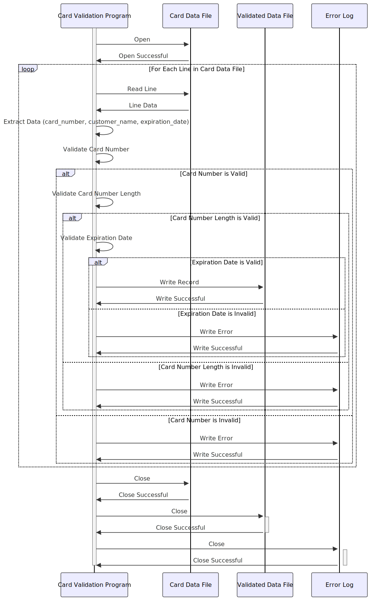

Gerado em: 1º de outubro de 2024
Título do Documento: Validação e Processamento de Dados de Cartão
Descrição Resumida:
Este programa valida dados de cartão de crédito de um arquivo chamado carddata.txt. Ele verifica o formato do número do cartão usando o Algoritmo de Luhn, o comprimento do número do cartão e a validade da data de expiração. Os registros válidos são gravados em um arquivo de saída e os registros inválidos são registrados.
Histórias do Usuário: Como analista de dados, desejo garantir que apenas registros de cartão de crédito válidos sejam usados para análise, portanto, preciso de um programa para validar os dados e fornecer um arquivo de saída apenas com os registros válidos.
Épico Relacionado:
3 - Gestão de Cartão de Crédito
Requisitos Técnicos:
Extração de Dados:
carddata.txt.card_number, customer_name e expiration_date dos campos.card_number, customer_name e expiration_date.Validação do Número do Cartão:
card_number (string).True se válido, False caso contrário.Validação do Comprimento do Número do Cartão:
card_number (string).card_number está dentro do intervalo aceitável (13-19 dígitos).True se válido, False caso contrário.Validação da Data de Expiração:
expiration_date (string).expiration_date corresponde ao formato YYYY-MM-DD.expiration_date em um objeto de data.True se válido, False caso contrário.Geração de Saída:
Modelos Relacionados:
card_number: String (13-19 dígitos).customer_name: String.expiration_date: Data (YYYY-MM-DD).Configurações:
input_file_path: carddata.txtoutput_file_path: validated_card_data.txtlog_file_path: card_validation_errors.logdate_format: YYYY-MM-DDMelhorias de Código:
Melhorias de Segurança:
Diagrama Conceitual:
–Made by “Smart Engineering” (by Compass.UOL)–